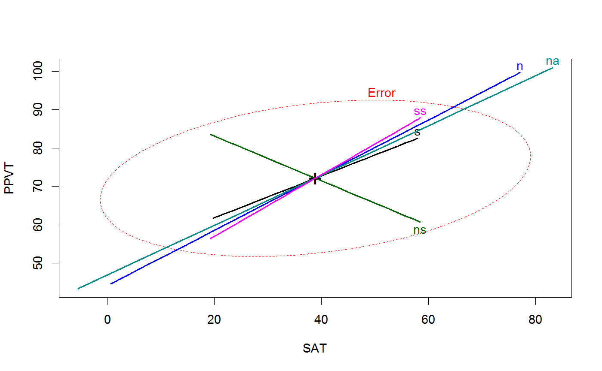

<!-- Generated by pkgdown: do not edit by hand -->
<!DOCTYPE html>
<html>
  <head>
  <meta charset="utf-8">
<meta http-equiv="X-UA-Compatible" content="IE=edge">
<meta name="viewport" content="width=device-width, initial-scale=1.0">

<title>Orthogonalize successive columns of a data frame or matrix — gsorth • heplots</title>

<!-- jquery -->
<script src="https://code.jquery.com/jquery-3.1.0.min.js" integrity="sha384-nrOSfDHtoPMzJHjVTdCopGqIqeYETSXhZDFyniQ8ZHcVy08QesyHcnOUpMpqnmWq" crossorigin="anonymous"></script>
<!-- Bootstrap -->
<link href="https://maxcdn.bootstrapcdn.com/bootswatch/3.3.7/cerulean/bootstrap.min.css" rel="stylesheet" crossorigin="anonymous">

<script src="https://maxcdn.bootstrapcdn.com/bootstrap/3.3.7/js/bootstrap.min.js" integrity="sha384-Tc5IQib027qvyjSMfHjOMaLkfuWVxZxUPnCJA7l2mCWNIpG9mGCD8wGNIcPD7Txa" crossorigin="anonymous"></script>

<!-- Font Awesome icons -->
<link href="https://maxcdn.bootstrapcdn.com/font-awesome/4.6.3/css/font-awesome.min.css" rel="stylesheet" integrity="sha384-T8Gy5hrqNKT+hzMclPo118YTQO6cYprQmhrYwIiQ/3axmI1hQomh7Ud2hPOy8SP1" crossorigin="anonymous">


<!-- pkgdown -->
<link href="../pkgdown.css" rel="stylesheet">
<script src="../jquery.sticky-kit.min.js"></script>
<script src="../pkgdown.js"></script>
  
  
<!-- mathjax -->
<script src='https://mathjax.rstudio.com/latest/MathJax.js?config=TeX-AMS-MML_HTMLorMML'></script>

<!--[if lt IE 9]>
<script src="https://oss.maxcdn.com/html5shiv/3.7.3/html5shiv.min.js"></script>
<script src="https://oss.maxcdn.com/respond/1.4.2/respond.min.js"></script>
<![endif]-->


  </head>

  <body>
    <div class="container template-reference-topic">
      <header>
      <div class="navbar navbar-default navbar-fixed-top" role="navigation">
  <div class="container">
    <div class="navbar-header">
      <button type="button" class="navbar-toggle collapsed" data-toggle="collapse" data-target="#navbar">
        <span class="icon-bar"></span>
        <span class="icon-bar"></span>
        <span class="icon-bar"></span>
      </button>
      <a class="navbar-brand" href="../index.html">heplots</a>
    </div>
    <div id="navbar" class="navbar-collapse collapse">
      <ul class="nav navbar-nav">
        <li>
  <a href="../index.html">
    <span class="fa fa-home fa-lg"></span>
     
  </a>
</li>
<li>
  <a href="../reference/index.html">Reference</a>
</li>
      </ul>
      
      <ul class="nav navbar-nav navbar-right">
        
      </ul>
    </div><!--/.nav-collapse -->
  </div><!--/.container -->
</div><!--/.navbar -->

      
      </header>

      <div class="row">
  <div class="col-md-9 contents">
    <div class="page-header">
    <h1>Orthogonalize successive columns of a data frame or matrix</h1>
    </div>

    
    <p><code>gsorth</code> uses sequential, orthogonal projections, as
in the Gram-Schmidt method, to transform a matrix or numeric
columns of a data frame into an uncorrelated set, possibly
retaining the same column means and standard deviations as the original.</p>
<p>In statistical applications, interpretation depends on 
the <code>order</code> of the variables orthogonalized.
In multivariate linear models, orthogonalizing the response, Y variables
provides the equivalent of step-down tests, where Y1 is tested alone,
and then Y2.1, Y3.12, etc. can be tested to determine their
additional contributions over the previous response variables.</p>
<p>Similarly, orthogonalizing the model X variables provides the
equivalent of Type I tests, such as provided by <code><a href='http://www.rdocumentation.org/packages/stats/topics/anova'>anova</a></code>.</p>
    

    <pre class="usage"><span class='fu'>gsorth</span>(<span class='no'>y</span>, <span class='no'>order</span>, <span class='kw'>recenter</span> <span class='kw'>=</span> <span class='fl'>TRUE</span>, <span class='kw'>rescale</span> <span class='kw'>=</span> <span class='fl'>TRUE</span>, <span class='kw'>adjnames</span> <span class='kw'>=</span> <span class='fl'>TRUE</span>)</pre>
    
    <h2 class="hasAnchor" id="arguments"><a class="anchor" href="#arguments"></a> Arguments</h2>
    <table class="ref-arguments">
    <colgroup><col class="name" /><col class="desc" /></colgroup>
    <tr>
      <th>y</th>
      <td><p>A numeric data frame or matrix</p></td>
    </tr>
    <tr>
      <th>order</th>
      <td><p>An integer vector specifying the order of and/or a subset of
the columns of <code>y</code> to be orthogonalized.
If missing, <code>order=1:p</code> where <code>p=ncol(y)</code>.</p></td>
    </tr>
    <tr>
      <th>recenter</th>
      <td><p>If <code>TRUE</code>, the result has same column means as original;
else means = 0 for cols <code>2:p</code>.</p></td>
    </tr>
    <tr>
      <th>rescale</th>
      <td><p>If <code>TRUE</code>, the result has same column standard deviations as original;
else sd = residual variance for cols <code>2:p</code></p></td>
    </tr>
    <tr>
      <th>adjnames</th>
      <td><p>If <code>TRUE</code>, the column names of the result  are adjusted to the form
Y1, Y2.1, Y3.12, by adding the suffixes '.1', '.12', etc. to the
original column names.</p></td>
    </tr>
    </table>
    
    <h2 class="hasAnchor" id="details"><a class="anchor" href="#details"></a>Details</h2>

    <p>The method is equivalent to setting each of columns <code>2:p</code> to
the residuals from a linear regression of that column on all prior
columns, i.e.,
    <code>z[,j] &lt;- resid( lm( z[,j] ~ as.matrix(z[,1:(j-1)]), data=z) )</code></p>
<p>However, for accuracy and speed the transformation is carried out using the QR decomposition.</p>
    
    <h2 class="hasAnchor" id="value"><a class="anchor" href="#value"></a>Value</h2>

    <p>Returns a matrix or data frame with uncorrelated columns.  Row and column names are
copied to the result.
<!-- %%  If it is a LIST, use -->
<!-- %%  \item{comp1 }{Description of 'comp1'} -->
<!-- %%  \item{comp2 }{Description of 'comp2'} -->
<!-- %% ... --></p>
    
    <h2 class="hasAnchor" id="see-also"><a class="anchor" href="#see-also"></a>See also</h2>

    <p><code><a href='http://www.rdocumentation.org/packages/base/topics/qr'>qr</a></code>,</p>
    

    <h2 class="hasAnchor" id="examples"><a class="anchor" href="#examples"></a>Examples</h2>
    <pre class="examples"><div class='input'><span class='no'>GSiris</span> <span class='kw'>&lt;-</span> <span class='fu'>gsorth</span>(<span class='no'>iris</span>[,<span class='fl'>1</span>:<span class='fl'>4</span>])
<span class='no'>GSiris</span> <span class='kw'>&lt;-</span> <span class='fu'>gsorth</span>(<span class='no'>iris</span>, <span class='kw'>order</span><span class='kw'>=</span><span class='fl'>1</span>:<span class='fl'>4</span>)   <span class='co'># same, using order</span>
<span class='fu'>str</span>(<span class='no'>GSiris</span>)</div><div class='output co'>#&gt;  num [1:150, 1:4] 5.1 4.9 4.7 4.6 5 5.4 4.6 5 4.4 4.9 ...
#&gt;  - attr(*, "dimnames")=List of 2
#&gt;   ..$ : chr [1:150] "1" "2" "3" "4" ...
#&gt;   ..$ : chr [1:4] "Sepal.Length" "Sepal.Width.1" "Petal.Length.12" "Petal.Width.123"</div><div class='input'><span class='fu'>zapsmall</span>(<span class='fu'>cor</span>(<span class='no'>GSiris</span>))</div><div class='output co'>#&gt;                 Sepal.Length Sepal.Width.1 Petal.Length.12 Petal.Width.123
#&gt; Sepal.Length               1             0               0               0
#&gt; Sepal.Width.1              0             1               0               0
#&gt; Petal.Length.12            0             0               1               0
#&gt; Petal.Width.123            0             0               0               1</div><div class='input'><span class='fu'>colMeans</span>(<span class='no'>GSiris</span>)</div><div class='output co'>#&gt;    Sepal.Length   Sepal.Width.1 Petal.Length.12 Petal.Width.123 
#&gt;        5.843333        3.057333        3.758000        1.199333 </div><div class='input'><span class='co'># sd(GSiris) -- sd(&lt;matrix&gt;) now deprecated</span>
<span class='fu'>apply</span>(<span class='no'>GSiris</span>, <span class='fl'>2</span>, <span class='no'>sd</span>)</div><div class='output co'>#&gt;    Sepal.Length   Sepal.Width.1 Petal.Length.12 Petal.Width.123 
#&gt;       0.8280661       0.4358663       1.7652982       0.7622377 </div><div class='input'>
<span class='co'># orthogonalize Y side</span>
<span class='no'>GSiris</span> <span class='kw'>&lt;-</span> <span class='fu'>data.frame</span>(<span class='fu'>gsorth</span>(<span class='no'>iris</span>[,<span class='fl'>1</span>:<span class='fl'>4</span>]), <span class='kw'>Species</span><span class='kw'>=</span><span class='no'>iris</span>$<span class='no'>Species</span>)
<span class='no'>iris.mod1</span> <span class='kw'>&lt;-</span> <span class='fu'>lm</span>(<span class='fu'>as.matrix</span>(<span class='no'>GSiris</span>[,<span class='fl'>1</span>:<span class='fl'>4</span>]) ~ <span class='no'>Species</span>, <span class='kw'>data</span><span class='kw'>=</span><span class='no'>GSiris</span>)
<span class='fu'>Anova</span>(<span class='no'>iris.mod1</span>)</div><div class='output co'>#&gt; 
#&gt; Type II MANOVA Tests: Pillai test statistic
#&gt;         Df test stat approx F num Df den Df    Pr(&gt;F)    
#&gt; Species  2    1.1919   53.466      8    290 &lt; 2.2e-16 ***
#&gt; ---
#&gt; Signif. codes:  0 <U+0091>***<U+0092> 0.001 <U+0091>**<U+0092> 0.01 <U+0091>*<U+0092> 0.05 <U+0091>.<U+0092> 0.1 <U+0091> <U+0092> 1</div><div class='input'>
<span class='co'># orthogonalize X side</span>
<span class='no'>rohwer.mod</span> <span class='kw'>&lt;-</span> <span class='fu'>lm</span>(<span class='fu'>cbind</span>(<span class='no'>SAT</span>, <span class='no'>PPVT</span>, <span class='no'>Raven</span>) ~ <span class='no'>n</span> + <span class='no'>s</span> + <span class='no'>ns</span> + <span class='no'>na</span> + <span class='no'>ss</span>, <span class='kw'>data</span><span class='kw'>=</span><span class='no'>Rohwer</span>)
<span class='fu'>Anova</span>(<span class='no'>rohwer.mod</span>)</div><div class='output co'>#&gt; 
#&gt; Type II MANOVA Tests: Pillai test statistic
#&gt;    Df test stat approx F num Df den Df   Pr(&gt;F)   
#&gt; n   1  0.059964   1.2970      3     61 0.283582   
#&gt; s   1  0.097788   2.2039      3     61 0.096703 . 
#&gt; ns  1  0.208820   5.3667      3     61 0.002406 **
#&gt; na  1  0.183478   4.5690      3     61 0.005952 **
#&gt; ss  1  0.091796   2.0552      3     61 0.115521   
#&gt; ---
#&gt; Signif. codes:  0 <U+0091>***<U+0092> 0.001 <U+0091>**<U+0092> 0.01 <U+0091>*<U+0092> 0.05 <U+0091>.<U+0092> 0.1 <U+0091> <U+0092> 1</div><div class='input'>
<span class='co'># type I tests for Rohwer data</span>
<span class='no'>Rohwer.orth</span> <span class='kw'>&lt;-</span> <span class='fu'>cbind</span>(<span class='no'>Rohwer</span>[,<span class='fl'>1</span>:<span class='fl'>5</span>], <span class='fu'>gsorth</span>(<span class='no'>Rohwer</span>[, <span class='fu'>c</span>(<span class='st'>"n"</span>, <span class='st'>"s"</span>, <span class='st'>"ns"</span>, <span class='st'>"na"</span>, <span class='st'>"ss"</span>)], <span class='kw'>adjnames</span><span class='kw'>=</span><span class='fl'>FALSE</span>))

<span class='no'>rohwer.mod1</span> <span class='kw'>&lt;-</span> <span class='fu'>lm</span>(<span class='fu'>cbind</span>(<span class='no'>SAT</span>, <span class='no'>PPVT</span>, <span class='no'>Raven</span>) ~ <span class='no'>n</span> + <span class='no'>s</span> + <span class='no'>ns</span> + <span class='no'>na</span> + <span class='no'>ss</span>, <span class='kw'>data</span><span class='kw'>=</span><span class='no'>Rohwer.orth</span>)
<span class='fu'>Anova</span>(<span class='no'>rohwer.mod1</span>)</div><div class='output co'>#&gt; 
#&gt; Type II MANOVA Tests: Pillai test statistic
#&gt;    Df test stat approx F num Df den Df    Pr(&gt;F)    
#&gt; n   1  0.227735   5.9962      3     61  0.001195 ** 
#&gt; s   1  0.088967   1.9857      3     61  0.125530    
#&gt; ns  1  0.112979   2.5898      3     61  0.060939 .  
#&gt; na  1  0.302957   8.8375      3     61 5.958e-05 ***
#&gt; ss  1  0.091796   2.0552      3     61  0.115521    
#&gt; ---
#&gt; Signif. codes:  0 <U+0091>***<U+0092> 0.001 <U+0091>**<U+0092> 0.01 <U+0091>*<U+0092> 0.05 <U+0091>.<U+0092> 0.1 <U+0091> <U+0092> 1</div><div class='input'><span class='co'># compare with anova()</span>
<span class='fu'>anova</span>(<span class='no'>rohwer.mod1</span>)</div><div class='output co'>#&gt; Analysis of Variance Table
#&gt; 
#&gt;             Df  Pillai approx F num Df den Df    Pr(&gt;F)    
#&gt; (Intercept)  1 0.97665   850.63      3     61 &lt; 2.2e-16 ***
#&gt; n            1 0.22774     6.00      3     61  0.001195 ** 
#&gt; s            1 0.08897     1.99      3     61  0.125530    
#&gt; ns           1 0.11298     2.59      3     61  0.060939 .  
#&gt; na           1 0.30296     8.84      3     61 5.958e-05 ***
#&gt; ss           1 0.09180     2.06      3     61  0.115521    
#&gt; Residuals   63                                             
#&gt; ---
#&gt; Signif. codes:  0 <U+0091>***<U+0092> 0.001 <U+0091>**<U+0092> 0.01 <U+0091>*<U+0092> 0.05 <U+0091>.<U+0092> 0.1 <U+0091> <U+0092> 1</div><div class='input'>
<span class='co'># compare heplots for original Xs and orthogonalized, Type I</span>
<span class='fu'><a href='heplot.html'>heplot</a></span>(<span class='no'>rohwer.mod</span>)</div><div class='img'></div><div class='input'><span class='fu'><a href='heplot.html'>heplot</a></span>(<span class='no'>rohwer.mod1</span>)</div><div class='img'></div><div class='input'>
</div></pre>
  </div>
  <div class="col-md-3 hidden-xs hidden-sm" id="sidebar">
    <h2>Contents</h2>
    <ul class="nav nav-pills nav-stacked">
      <li><a href="#arguments">Arguments</a></li>
      
      <li><a href="#details">Details</a></li>

      <li><a href="#value">Value</a></li>

      <li><a href="#see-also">See also</a></li>
      
      <li><a href="#examples">Examples</a></li>
    </ul>

    <h2>Author</h2>
    
Michael Friendly

  </div>
</div>

      <footer>
      <div class="copyright">
  <p>Developed by John Fox, Michael Friendly.</p>
</div>

<div class="pkgdown">
  <p>Site built with <a href="http://hadley.github.io/pkgdown/">pkgdown</a>.</p>
</div>

      </footer>
   </div>

  </body>
</html>
